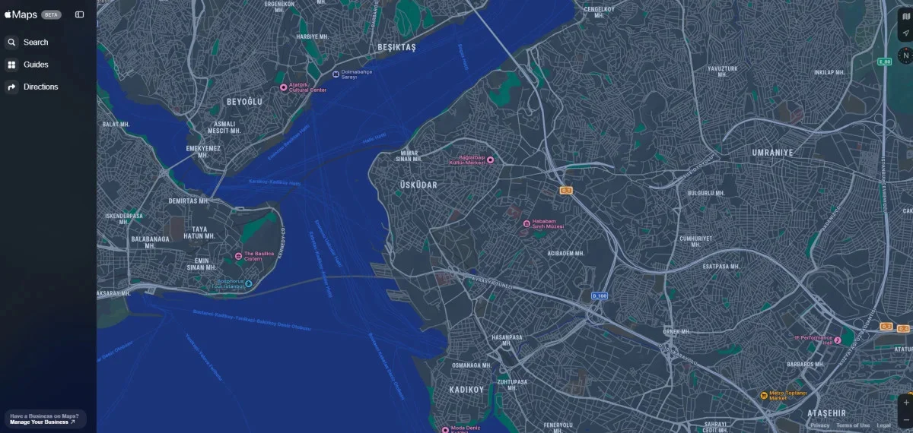

ABD merkezli teknoloji devi Apple, navigasyon uygulaması Apple Haritalar'ı Android platformuna getirmeyi düşünüyor.
Apple, uzun yıllardır kendi ekosistemine özel tuttuğu Haritalar uygulamasını Android işletim sistemine getirmeye hazırlanıyor. Bu hamle, Apple'ın stratejisinde önemli bir dönüm noktası olarak değerlendiriliyor. Şirket, geçtiğimiz günlerde Haritalar uygulamasının web tabanlı sürümünü de kullanıma sunmuştu. Şimdilik sadece İngilizce olarak kullanılabilen Apple Haritalar'a beta.maps.apple.com adresi üzerinden erişilebiliyor.
Apple, navigasyon uygulaması Apple Haritalar'ı Android platformuna getirmeyi düşünüyor. Eğer bu gerçekleşirse, Apple dünya çapında yaklaşık 3,9 milyar kullanıcıya sahip Google Maps uygulamasına doğrudan rakip olacak.
Apple Haritalar, Google Haritalar'ın sunduğu geniş özellik havuzuna rağmen, kullanıcı deneyimini kişiselleştirmeye yönelik yenilikçi çözümleriyle öne çıkmaya devam ediyor. Gerçek dünya simgelerini kullanarak dönüşlerde kullanıcıları daha net bir şekilde yönlendiren uygulama, iOS 18 ile birlikte daha da zenginleşiyor. Son güncellemeyle birlikte Japonya'daki toplu taşıma ağı, uygulamaya eklenen 20 tren, otobüs ve tramvay hattıyla daha da genişletildi. Bu sayede Japonya'da seyahat eden kullanıcılar, gerçek zamanlı ulaşım bilgilerine kolayca erişebiliyor.